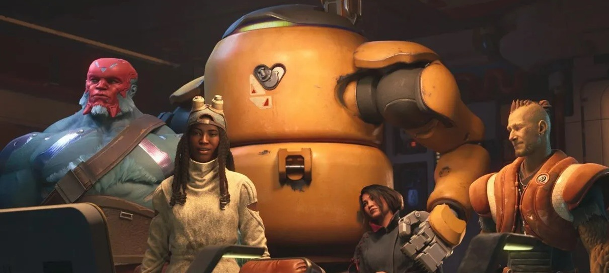
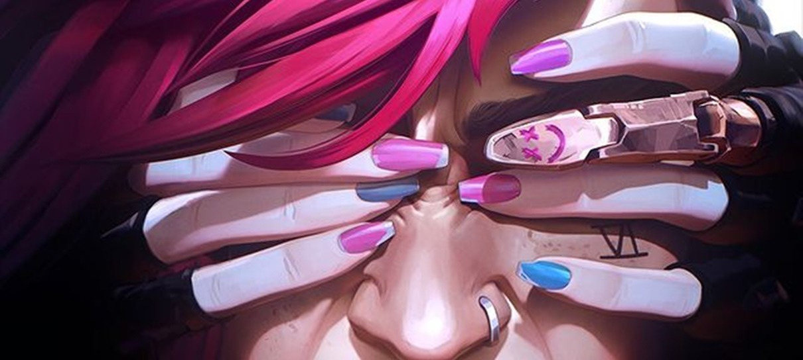

Notícias de Hoje
Início
Notícias
Jogos
Cultura
Estilo de Vida
O fim do X (Twitter) no Brasil
Às cinco horas da tarde, a Agência Nacional de Telecomunicações, Anatel, informou ao ministro Alexandre de Moraes, do Supremo Tribunal Federal, que as mais de vinte mil operadoras de telecomunicações do país foram notificadas da decisão de suspender a rede social X.

Concord é encerrado, e estúdio agradece fãs em comunicado
"Obrigado por terem se juntado a nós na jornada", escreveram os desenvolvedores.

Vi é destaque em novo pôster da temporada final de Arcane
Com uma pequena participação de Jinx.
Pôster da terceira temporada de One Punch Man destaca Atomic Samurai
Personagem é conhecido como o espadachim mais forte da Terra.
Destaques
• STF prevê multa diária de R$ 50 mil para quem furar bloqueio ao X
• Eclipse parcial da Lua poderá ser visto do Brasil em setembro
• "Ainda Estou Aqui", filme brasileiro, leva prêmio de melhor roteiro no Festival de Veneza